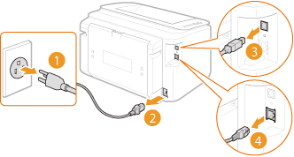

Relocating the Machine
The machine is heavy. To avoid injury, be sure to follow the procedure below when moving the machine. Also be sure to read the safety instructions before you begin. Important Safety Instructions
1
Turn OFF the machine and computer.
When you turn OFF the machine, data that is waiting to be printed is deleted.
2
Disconnect the cables and cord from the machine in numerical order as in the illustration below.
Whether or not a USB cable ( ) and LAN cable (
) and LAN cable ( ) are connected depends on your environment.
) are connected depends on your environment.
) and LAN cable () are connected depends on your environment.
 Power plug Power plug Power cord
USB cable LAN cable |
 |
3
If you will be transporting the machine across a long distance, remove the toner cartridge. How to Replace Toner Cartridges
4
Close the multi-purpose tray, auxiliary tray, and all similar parts, and carry the machine to its new location.
To carry the machine, grasp it on both sides with the front side facing you.

5
Carefully place the machine at its new location.
For the procedure to follow after moving the machine, see the "Getting Started." Manuals Included with the Machine